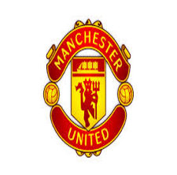

The Soccer Clubs League
Welcome to Football Transfer League, bringing you clubs football teams and players from the leagues. At Football Transfer League we collect the transfers and football rumours that the press and the rumour sites produce and distill them in order to extract interesting statistics.
Manchester Utd
Manchester United Football Club is an English professional football club, based in Old Trafford, Greater Manchester, that plays in the Premier League. Founded as Newton Heath LYR Football Club in 1878, the club changed its name to Manchester United in 1902 and moved to Old Trafford in 1910. Manchester United have won many trophies in English football, including a record 20 League titles, a record 11 FA Cups, four League Cups and a record 20 FA Community Shields. The club has also won three European Cups, one UEFA Cup Winners' Cup, one UEFA Super Cup, one Intercontinental Cup and one FIFA Club World Cup. In 1998–99, the club won a continental treble of the Premier League, the FA Cup and the UEFA Champions League, an unprecedented feat for an English club.
Manchester United is the third-richest football club in the world for 2011–12 in terms of revenue, with an annual revenue of €395.9 million, and the second most valuable sports team in 2013, valued at $3.165 billion. It is one of the most widely supported football teams in the world. After being floated on the London Stock Exchange in 1991, the club was purchased by Malcolm Glazer in May 2005 in a deal valuing the club at almost £800 million
Chelsea
 Chelsea Football Club /ˈtʃɛlsiː/ is an English football club based in Fulham, London. Founded in 1905, they play in the Premier League and have spent most of their history in the top tier of English football. Their home ground is the 41,837-seat[2] Stamford Bridge stadium, where they have played since their establishment. Chelsea had their first major success in 1955, when they won the league championship, and won various cup competitions during the 1960s, 1970s, 1990s and 2000s. The club has enjoyed its greatest period of success in the past two decades, winning 15 major trophies since 1997.[3] Domestically, Chelsea have won four league titles, seven FA Cups, four League Cups and four FA Community Shields, while in continental competitions they have won two UEFA Cup Winners' Cups, one UEFA Super Cup, one UEFA Europa League and one UEFA Champions League. In July 2003, Roman Abramovich purchased just over 50% of Chelsea Village plc's share capital, including Bates' 29.5% stake, for £30 million and over the following weeks bought out most of the remaining 12,000 shareholders at 35 pence per share, completing a £140 million takeover.
Chelsea Football Club /ˈtʃɛlsiː/ is an English football club based in Fulham, London. Founded in 1905, they play in the Premier League and have spent most of their history in the top tier of English football. Their home ground is the 41,837-seat[2] Stamford Bridge stadium, where they have played since their establishment. Chelsea had their first major success in 1955, when they won the league championship, and won various cup competitions during the 1960s, 1970s, 1990s and 2000s. The club has enjoyed its greatest period of success in the past two decades, winning 15 major trophies since 1997.[3] Domestically, Chelsea have won four league titles, seven FA Cups, four League Cups and four FA Community Shields, while in continental competitions they have won two UEFA Cup Winners' Cups, one UEFA Super Cup, one UEFA Europa League and one UEFA Champions League. In July 2003, Roman Abramovich purchased just over 50% of Chelsea Village plc's share capital, including Bates' 29.5% stake, for £30 million and over the following weeks bought out most of the remaining 12,000 shareholders at 35 pence per share, completing a £140 million takeover.
Barcalona
 Futbol Club Barcelona (Catalan pronunciation: [fubˈbɔɫ ˈkɫub bərsəˈɫonə] ( listen)), also known as Barcelona and familiarly as Barça,[1] is a professional football club, based in Barcelona, Catalonia, Spain. Founded in 1899 by a group of Swiss, English and Catalan footballers led by Joan Gamper, the club has become a symbol of Catalan culture and Catalanism, hence the motto "Més que un club" (More than a club). Unlike many other football clubs, the supporters own and operate Barcelona. It is the world's second-richest football club in terms of revenue, with an annual turnover of $613 million and the third most valuable, worth $2.6 billion.[2][3] The official Barcelona anthem is the "Cant del Barça", written by Jaume Picas and Josep Maria Espinàs.[4]
Futbol Club Barcelona (Catalan pronunciation: [fubˈbɔɫ ˈkɫub bərsəˈɫonə] ( listen)), also known as Barcelona and familiarly as Barça,[1] is a professional football club, based in Barcelona, Catalonia, Spain. Founded in 1899 by a group of Swiss, English and Catalan footballers led by Joan Gamper, the club has become a symbol of Catalan culture and Catalanism, hence the motto "Més que un club" (More than a club). Unlike many other football clubs, the supporters own and operate Barcelona. It is the world's second-richest football club in terms of revenue, with an annual turnover of $613 million and the third most valuable, worth $2.6 billion.[2][3] The official Barcelona anthem is the "Cant del Barça", written by Jaume Picas and Josep Maria Espinàs.[4]
Barcelona are the most successful club in Spain, in terms of overall official titles won (83). Barcelona were ranked first in the 'All-Time Club World Ranking' by IFFHS, on December 31, 2009,[5] and are also currently placed on top of the UEFA club rankings.[6] They are the current Spanish football champions and have won 22 La Liga, 26 Copa del Rey, 11 Supercopa de España, 3 Copa Eva Duarte[7] and 2 Copa de la Liga trophies, as well as being the record holder for the latter four competitions. In international club football, Barcelona have won four UEFA Champions League, a record four UEFA Cup Winners' Cup, four UEFA Super Cup, a record three Inter-Cities Fairs Cup[8] and a record two FIFA Club World Cup trophies.[9] The club has a long-standing rivalry with Real Madrid; matches between the two teams are referred to as "El Clásico".
 Real Madrid Club de Fútbol (Spanish pronunciation: [reˈal maˈðɾið ˈkluβ ðe ˈfuðβol]; Royal Madrid Football Club), commonly known as Real Madrid, is a professional football club based in Madrid, Spain. Founded in 1902 as Madrid Football Club, has traditionally worn a white home kit since. The word Real is Spanish for royal and was bestowed to the club by King Alfonso XIII in 1920 together with the royal crown in the emblem. The team has played its home matches in the 85,454-capacity Santiago Bernabéu Stadium in downtown Madrid since 1947. Unlike most European football clubs, Real Madrid's members (socios) have owned and operated the club since its inception.
Real Madrid Club de Fútbol (Spanish pronunciation: [reˈal maˈðɾið ˈkluβ ðe ˈfuðβol]; Royal Madrid Football Club), commonly known as Real Madrid, is a professional football club based in Madrid, Spain. Founded in 1902 as Madrid Football Club, has traditionally worn a white home kit since. The word Real is Spanish for royal and was bestowed to the club by King Alfonso XIII in 1920 together with the royal crown in the emblem. The team has played its home matches in the 85,454-capacity Santiago Bernabéu Stadium in downtown Madrid since 1947. Unlike most European football clubs, Real Madrid's members (socios) have owned and operated the club since its inception. Etiam molestie, risus eu gravida lobortis, velit sapien aliquam lectus, nec hendrerit lectus erat ac libero. Aenean fermentum luctus viverra. Pellentesque id lectus ante, vel tristique elit. Fusce mattis, purus non consectetur cursus, justo nisi viverra sem, ac lobortis ipsum sapien vel purus. Vivamus aliquet gravida nibh sit amet accumsan. Fusce et lorem nunc. Sed convallis, tortor nec ornare sagittis, velit ligula varius sapien, eu cursus nisl purus sed felis. Morbi congue pellentesque quam, eu ultricies. Pellentesque habitant morbi tristique senectus et netus et malesuada fames ac turpis egestas. Nulla facilisi. Class aptent taciti sociosqu ad litora torquent per conubia nostra, per inceptos himenaeos. Nunc rhoncus tortor quis eros bibendum a tempus est dapibus. Vivamus consectetur quam eu tellus porttitor ultrices. Nunc metus massa, ullamcorper sit amet malesuada a, porttitor in tellus. Vestibulum ullamcorper quam nec lorem aliquam id feugiat risus tincidunt. Aenean fermentum luctus viverra. Pellentesque id lectus ante, vel tristique elit. Fusce mattis, purus non consectetur cursus, justo nisi viverra sem, ac lobortis ipsum sapien vel purus. Vivamus aliquet gravida nibh.
Etiam molestie, risus eu gravida lobortis, velit sapien aliquam lectus, nec hendrerit lectus erat ac libero. Aenean fermentum luctus viverra. Pellentesque id lectus ante, vel tristique elit. Fusce mattis, purus non consectetur cursus, justo nisi viverra sem, ac lobortis ipsum sapien vel purus. Vivamus aliquet gravida nibh sit amet accumsan. Fusce et lorem nunc. Sed convallis, tortor nec ornare sagittis, velit ligula varius sapien, eu cursus nisl purus sed felis. Morbi congue pellentesque quam, eu ultricies. Pellentesque habitant morbi tristique senectus et netus et malesuada fames ac turpis egestas. Nulla facilisi. Class aptent taciti sociosqu ad litora torquent per conubia nostra, per inceptos himenaeos. Nunc rhoncus tortor quis eros bibendum a tempus est dapibus. Vivamus consectetur quam eu tellus porttitor ultrices. Nunc metus massa, ullamcorper sit amet malesuada a, porttitor in tellus. Vestibulum ullamcorper quam nec lorem aliquam id feugiat risus tincidunt. Aenean fermentum luctus viverra. Pellentesque id lectus ante, vel tristique elit. Fusce mattis, purus non consectetur cursus, justo nisi viverra sem, ac lobortis ipsum sapien vel purus. Vivamus aliquet gravida nibh.